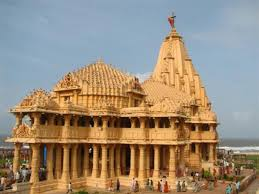

Somnath

The Somnath temple located in Prabhas Patan near Veraval in Saurashtra on the western coast of Gujarat, is believed to be the first among the twelve jyotirlinga shrines of Shiva. It is an important pilgrimage and tourist spot of Gujarat. Destroyed and reconstructed several times in the past, the present temple was reconstructed in Chaulukya style of Hindu temple architecture and completed in May 1951. The reconstruction was envisioned by Vallabhbhai Patel and was completed under K. M. Munshi, the then head of the temple trust.

HOW TO REACH ?
Nearest Airport: Keshod
Nearest Railway Station: Somnath
Nearest Bus Stand: Somnath